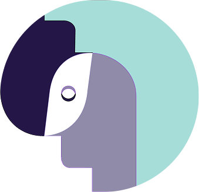

QUANDO NON SAI DA DOVE INIZIARE, INZIA DA QUI.
Un punto d'incontro pensato da studentə per studentə, dove parlare di benessere mentale è semplice, sicuro e senza giudizio.
Informarsi, orientarsi, sentirsi compresə: qui tutto parte da un piccolo clic.
Ansia da prestazione, insonnia, stress, burnout e difficoltà a relazionarsi: a volte sapere come ti senti è difficile, soprattutto se non sai da dove partire.Abbiamo raccolto le esperienze più comuni tra gli studenti universitari per aiutarti a dare un nome a quello che stai vivendo.
CAPIRE COSA STAI VIVENDO
Quando qualcosa pesa, non devi affrontarlo da solo. A volte non bastano le parole giuste dentro la testa: parlarne può fare davvero la differenza. Che tu studi alla Cittadella o in centro, ti aiutiamo a capire a chi rivolgerti. Abbiamo raccolto sportelli gratuiti e professionisti affidabili: perché trovare aiuto non dovrebbe essere complicato.
SPAZIO DI ASCOLTO